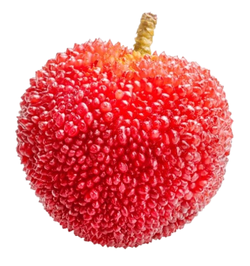
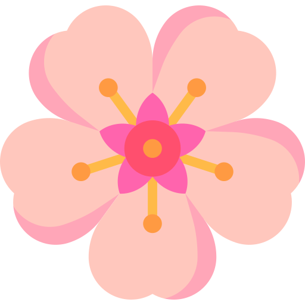
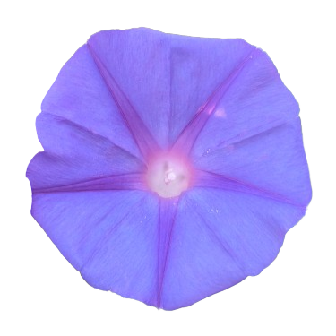
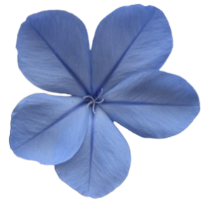
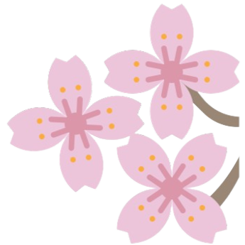
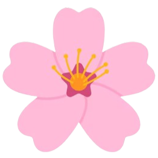

Bienvenue dans l'univers des fleurs 🌸
Mettre une description ici
DécouvrirAucun résultat trouvé.
 Cératostigma
Cératostigma
Feuillage flamboyant et aux fleurs bleu intense, le ceratostigma égaie l’automne avec éclat et légèreté..
Abelia
Illumine les jardins de sa douceur parfumée du printemps jusqu’aux premières gelées.
Arbouse
Symbole de générosité et de beauté méditerranéenne.
 Viorne Tin
Viorne Tin
Symbole de générosité et de beauté méditerranéenne.
Rosier des chiens
Ses épines défendent un trésor : de délicates fleurs rosées et un fruit riche en vitamine C.
 Ipomée d’Inde
Elle s’ouvre au matin comme un ciel d’azur, et se referme avant midi.
Dentelaire du Cap
Un bleu tendre et aérien, comme soufflé par les brises du sud.
Gainier du Canada
Avant même ses feuilles, il se pare d’un voile rose qui éveille les paysages endormis.
Merisier
Grand arbre vigoureux, à tronc droit et élancé qui peut atteindre 20 mètres de haut.
 Ciste à feuilles de sauge
Ciste à feuilles de sauge
Rustique et parfumé, le ciste à feuille de sauge sublime vos jardins méditerranéen avec élégance et résistance.
Ornithogale en ombelle
Étoiles blanches au ras du sol, timides mais lumineuses.
Iris d’Allemagne
Drapant les jardins de ses plis violets comme une bannière d’aristocratie végétale, il s’élève avec noblesse.